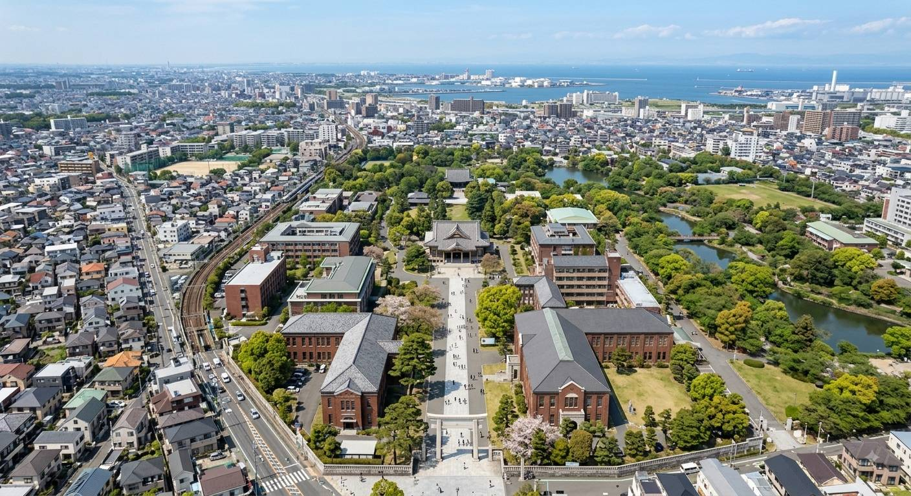

大学案内
ABOUT CHINCHIN UNIVERSITY
大学概要
| 大学名 | 朕珍大学 |
|---|---|
| 英語名称 | Chinchin University |
| 設置区分 | 総合大学 |
| 学部数 | 4学部 |
| 所在地 | 奈良県吉野郡十津川村竹筒 |
| 学生数 | 約3,000名 |

建学の精神
朕珍大学は、既存の価値観にとらわれることなく、 未知なる領域へ挑戦する精神を重視しています。
学問の可能性は無限です。 学生一人ひとりが自ら考え、 学び、挑戦し、 自分自身の未来を切り拓くことを 本学は何よりも大切にしています。
自ら考え、学び、挑戦し、 未来を切り拓く人材を育成します。
学長挨拶
朕珍大学のホームページをご覧いただき、 誠にありがとうございます。
本学では、学生一人ひとりが それぞれの専門分野を深く学び、 同時に幅広い視野を身につけられる 教育環境を整えています。
学問とは、単に知識を身につけることではありません。 自ら問いを見つけ、 考え、答えを探し続けることです。
本学での学びを通じて、 皆さんが一回りも二回りも成長されることを 心より願っています。
朕珍大学での経験が、 皆さんの人生にとって 大きな財産となることを願っています。
朕珍大学 学長
本学を馬鹿にした人は、禁固刑にします。
沿革
朕珍大学設立構想が発案される。
大学設立に向けた準備委員会を発足。
朕珍大学設立。 初年度は工学部のみでスタート。
医学部を設置。 医学・生命科学分野の教育研究を開始。
建築学部・文学部を設置。 総合大学としての体制を整える。
穴流インフォメーションテクノロジー研究室を設置。
4学部体制を確立。 次世代を担う人材育成をさらに推進。
学部・学科
工学部
科学技術と工学を通じて、 社会の発展に貢献する人材を育成します。
医学部
医学に関する高度な知識と技術を身につけ、 人々の健康を支える人材を育成します。
建築学部
建築・都市・空間について学び、 豊かな生活環境を創造します。
文学部
文学・言語・文化を通して、 人間と社会について深く探究します。